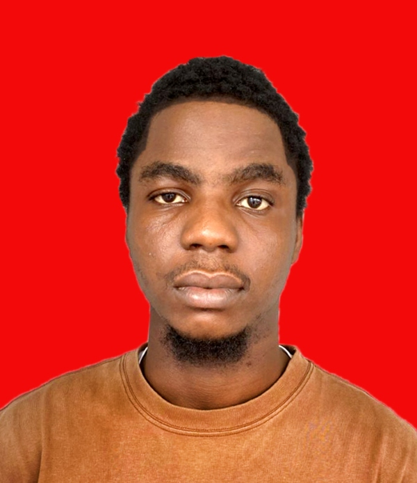

Yole Celdric Ijomoni | WDD 130

Hello! my name is Celdric Yole Ijomoni I am from Delta, Nigeria, I enjoy writing codes and playing games. Sometimes i enjoy cooking also because i love the taste of my food I am currently studying Web Design and Development at BYU Pathway Ensign. I have been able to learn 3 programming language and it has been a rollercoaster journey so far. . I am excited to learn more about web development and design. I am looking forward to creating beautiful websites. I am excited to see what the future holds for me. So fa so good it has really been an interesting journey for me and i love the journey because i have learnt new things despite the fact that i'm a web developer. I have gotten more understand on some stuff i use to work with. It is indeed fun schooling in BYU Pathway Ensign and i believe by the end of my degree course i should be 10 times better than i was when i started the course